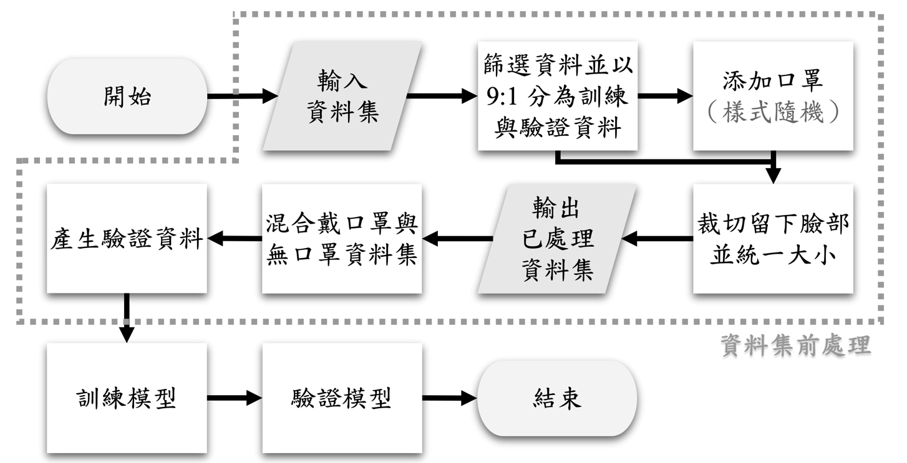

注意力機制對戴口罩人臉辨識的影響
林妤娟、羅和禾
摘要
本研究旨在探討注意力機制對戴口罩的人臉辨識之影響。我們在模型中添加CBAM 注意力機制，製作不同資料集進行訓練與驗證模型，並加以比較各實驗組別辨識之正確率。研究結果顯示，注意力機制普遍有助於提升辨識成功率。使用混合資料集測試與驗證，並加上注意力機制的實驗組別辨識正確率高達84.3%，是所有實驗組別中正確率最高的一組。注意力機制能避免將口罩誤認為人臉特徵，將模型加上注意力機制並使用混合資料集訓練時，能有效提升辨識率。若使用大型資料集訓練，添加注意力機制的模型可望獲得更高的正確率。
研究目的
（一）比較使用不同資料集對人臉辨識正確率的影響。
（二）比較模型添加注意力機制前後對人臉辨識正確率的影響。
（三）以熱圖視覺化模型關注的人臉區域，比較模型添加注意力前後的不同。
研究過程與方法
研究成果與展望
本研究中注意力機制能避免將口罩誤認為人臉特徵，且將模型加上注意力機制並使用混合資料集訓練時，能有效提升辨識率。若使用大型資料集訓練，添加注意力機制的模型可望獲得更高的正確率，期能有助於未來發展更加通用之戴口罩的人臉辨識方法，使僅擁有一般相機的用戶也能進行既安全又有效的戴口罩的人臉辨識。